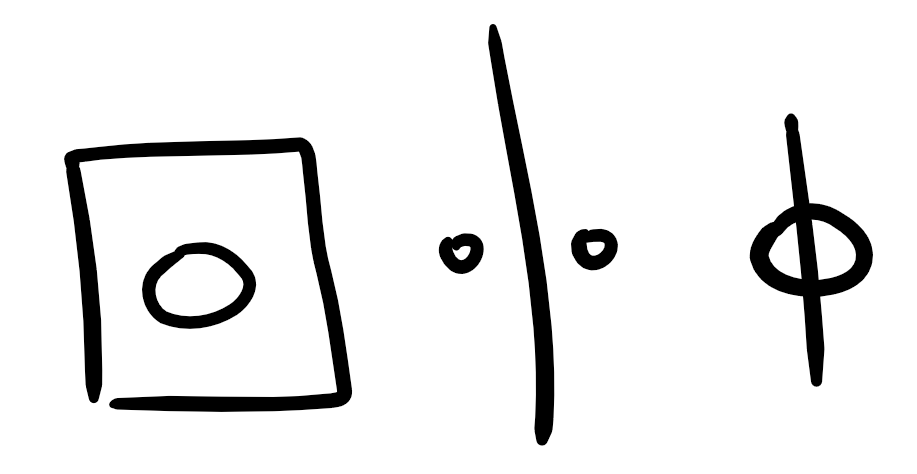

Now last updated 2017.1.14
Jobless and houseless by design; traveling through Oceania and Southeast Asia and working on projects. Here are some specifics:
- Building a database.
A symbolic and multilingual ontological graph database for organizing educational materials (images, videos, etc.) along the time and size scales of the universe. Eventually tying in community criticisms, comments, questions, etc.
- Building a web interface.
Knowlo.io, a site to explore and learn about humanities greatest insights. Starting out as a static site, but eventually getting some real hosting and essentially operating as an interface for the above database.
- Rapid prototyping of messages and mediums.
Working through a laundry list of ideas to flesh out in the form of articles, comics, drawings, video...
Certainly need to make this goal a bit more concrete. Trying to come up with a platform name to publish under...Tillt? Deep Breadth? Knowlo?
- Working towards a 'default to transparency' lifestyle.
I don't know what exactly this means, but inspired by the values under which the company Buffer operates. The goal is to experiment and find balance on what to share and what makes sense to keep private.
Current Location